<!DOCTYPE html>


<html lang="en" data-content_root="../" >

  <head>
    <meta charset="utf-8" />
    <meta name="viewport" content="width=device-width, initial-scale=1.0" /><meta name="viewport" content="width=device-width, initial-scale=1" />

    <title>The GF2 &amp; GW method &#8212; sparse-ir</title>
  
  
  
  <script data-cfasync="false">
    document.documentElement.dataset.mode = localStorage.getItem("mode") || "";
    document.documentElement.dataset.theme = localStorage.getItem("theme") || "";
  </script>
  <!--
    this give us a css class that will be invisible only if js is disabled
  -->
  <noscript>
    <style>
      .pst-js-only { display: none !important; }

    </style>
  </noscript>
  
  <!-- Loaded before other Sphinx assets -->
  <link href="../_static/styles/theme.css?digest=55c26ed414f5f8a31ebb" rel="stylesheet" />
<link href="../_static/styles/pydata-sphinx-theme.css?digest=55c26ed414f5f8a31ebb" rel="stylesheet" />

    <link rel="stylesheet" type="text/css" href="../_static/pygments.css?v=03e43079" />
    <link rel="stylesheet" type="text/css" href="../_static/styles/sphinx-book-theme.css?v=3c74b3bc" />
    <link rel="stylesheet" type="text/css" href="../_static/togglebutton.css?v=9c3e77be" />
    <link rel="stylesheet" type="text/css" href="../_static/copybutton.css?v=76b2166b" />
    <link rel="stylesheet" type="text/css" href="../_static/mystnb.11b39860a7a0cbfd473a3ad8a317855267ff0bd372690045ca344a6b62be495e.css" />
    <link rel="stylesheet" type="text/css" href="../_static/sphinx-thebe.css?v=4fa983c6" />
    <link rel="stylesheet" type="text/css" href="../_static/sphinx-design.min.css?v=95c83b7e" />
  
  <!-- So that users can add custom icons -->
  <script defer src="../_static/scripts/fontawesome.js?digest=55c26ed414f5f8a31ebb"></script>
  <!-- Pre-loaded scripts that we'll load fully later -->
  <link rel="preload" as="script" href="../_static/scripts/bootstrap.js?digest=55c26ed414f5f8a31ebb" />
<link rel="preload" as="script" href="../_static/scripts/pydata-sphinx-theme.js?digest=55c26ed414f5f8a31ebb" />

    <script src="../_static/documentation_options.js?v=9eb32ce0"></script>
    <script src="../_static/doctools.js?v=9a2dae69"></script>
    <script src="../_static/sphinx_highlight.js?v=dc90522c"></script>
    <script src="../_static/clipboard.min.js?v=a7894cd8"></script>
    <script src="../_static/copybutton.js?v=f281be69"></script>
    <script src="../_static/scripts/sphinx-book-theme.js?v=fab101a9"></script>
    <script>let toggleHintShow = 'Click to show';</script>
    <script>let toggleHintHide = 'Click to hide';</script>
    <script>let toggleOpenOnPrint = 'true';</script>
    <script src="../_static/togglebutton.js?v=b8b12719"></script>
    <script>var togglebuttonSelector = '.toggle, .admonition.dropdown';</script>
    <script src="../_static/design-tabs.js?v=f930bc37"></script>
    <script async="async" src="https://www.googletagmanager.com/gtag/js?id=G-RD8N0K0C9Y"></script>
    <script>
                window.dataLayer = window.dataLayer || [];
                function gtag(){ dataLayer.push(arguments); }
                gtag('consent', 'default', {
                    'ad_storage': 'denied',
                    'ad_user_data': 'denied',
                    'ad_personalization': 'denied',
                    'analytics_storage': 'denied'
                });
                gtag('js', new Date());
                gtag('config', 'G-RD8N0K0C9Y');
            </script>
    <script>const THEBE_JS_URL = "https://unpkg.com/thebe@0.8.2/lib/index.js"; const thebe_selector = ".thebe,.cell"; const thebe_selector_input = "pre"; const thebe_selector_output = ".output, .cell_output"</script>
    <script async="async" src="../_static/sphinx-thebe.js?v=c100c467"></script>
    <script>var togglebuttonSelector = '.toggle, .admonition.dropdown';</script>
    <script>
                window.dataLayer = window.dataLayer || [];
                function gtag(){ dataLayer.push(arguments); }
                gtag('consent', 'default', {
                    'ad_storage': 'denied',
                    'ad_user_data': 'denied',
                    'ad_personalization': 'denied',
                    'analytics_storage': 'denied'
                });
                gtag('js', new Date());
                gtag('config', 'G-RD8N0K0C9Y');
            </script>
    <script>const THEBE_JS_URL = "https://unpkg.com/thebe@0.8.2/lib/index.js"; const thebe_selector = ".thebe,.cell"; const thebe_selector_input = "pre"; const thebe_selector_output = ".output, .cell_output"</script>
    <script>window.MathJax = {"options": {"processHtmlClass": "tex2jax_process|mathjax_process|math|output_area"}}</script>
    <script defer="defer" src="https://cdn.jsdelivr.net/npm/mathjax@3/es5/tex-mml-chtml.js"></script>
    <script>DOCUMENTATION_OPTIONS.pagename = 'src/GW_py';</script>
    <script>DOCUMENTATION_OPTIONS.search_as_you_type = false;</script>
    <link rel="index" title="Index" href="../genindex.html" />
    <link rel="search" title="Search" href="../search.html" />
    <link rel="next" title="DMFT with IPT solver" href="DMFT_IPT_py.html" />
    <link rel="prev" title="Second-order perturbation" href="second_order_perturbation_py.html" />
  <meta name="viewport" content="width=device-width, initial-scale=1"/>
  <meta name="docsearch:language" content="en"/>
  <meta name="docsearch:version" content="" />
  
    
    <script src="../_static/searchtools.js"></script>
    <script src="../_static/language_data.js"></script>
    <script src="../searchindex.js"></script>
  
  </head>
  <body data-default-mode="">
  
  
  <div id="pst-skip-link" class="skip-link d-print-none"><a href="#main-content">Skip to main content</a></div>

  
  <div id="pst-scroll-pixel-helper"></div>
  
  <button type="button" class="btn rounded-pill" id="pst-back-to-top">
    <i class="fa-solid fa-arrow-up"></i>Back to top</button>
  
  
  
  
  <dialog id="pst-search-dialog">
    
<form class="bd-search d-flex align-items-center"
      action="../search.html"
      method="get">
  <i class="fa-solid fa-magnifying-glass"></i>
  <input type="search"
         class="form-control"
         name="q"
         placeholder="Search this book..."
         aria-label="Search this book..."
         autocomplete="off"
         autocorrect="off"
         autocapitalize="off"
         spellcheck="false"/>
  <span class="search-button__kbd-shortcut"><kbd class="kbd-shortcut__modifier">Ctrl</kbd>+<kbd>K</kbd></span>
</form>
  </dialog>

  <div class="pst-async-banner-revealer d-none">
  <aside id="bd-header-version-warning" class="d-none d-print-none" aria-label="Version warning"></aside>
</div>

  
    <header id="pst-header" class="bd-header navbar navbar-expand-lg bd-navbar d-print-none">
<div class="bd-header__inner bd-page-width">
  <button class="pst-navbar-icon sidebar-toggle primary-toggle" aria-label="Site navigation">
    <span class="fa-solid fa-bars"></span>
  </button>
  
  
  <div class="col-lg-9 navbar-header-items">
    
    
    <div class="navbar-header-items__end">
      
        <div class="navbar-item navbar-persistent--container">
          

<button class="btn search-button-field search-button__button pst-js-only" title="Search" aria-label="Search" data-bs-placement="bottom" data-bs-toggle="tooltip">
 <i class="fa-solid fa-magnifying-glass"></i>
 <span class="search-button__default-text">Search</span>
 <span class="search-button__kbd-shortcut"><kbd class="kbd-shortcut__modifier">Ctrl</kbd>+<kbd class="kbd-shortcut__modifier">K</kbd></span>
</button>
        </div>
      
      
    </div>
    
  </div>
  
  
    <div class="navbar-persistent--mobile">

<button class="btn search-button-field search-button__button pst-js-only" title="Search" aria-label="Search" data-bs-placement="bottom" data-bs-toggle="tooltip">
 <i class="fa-solid fa-magnifying-glass"></i>
 <span class="search-button__default-text">Search</span>
 <span class="search-button__kbd-shortcut"><kbd class="kbd-shortcut__modifier">Ctrl</kbd>+<kbd class="kbd-shortcut__modifier">K</kbd></span>
</button>
    </div>
  

  
    <button class="pst-navbar-icon sidebar-toggle secondary-toggle" aria-label="On this page">
      <span class="fa-solid fa-outdent"></span>
    </button>
  
</div>

    </header>
  

  <div class="bd-container">
    <div class="bd-container__inner bd-page-width">
      
      
      
      <dialog id="pst-primary-sidebar-modal"></dialog>
      <div id="pst-primary-sidebar" class="bd-sidebar-primary bd-sidebar">
        

  
  <div class="sidebar-header-items sidebar-primary__section">
    
    
    
    
  </div>
  
    <div class="sidebar-primary-items__start sidebar-primary__section">
        <div class="sidebar-primary-item">

  
    
  

<a class="navbar-brand logo" href="../index.html">
  
  
  
  
  
  
    <p class="title logo__title">sparse-ir</p>
  
</a></div>
        <div class="sidebar-primary-item">

<button class="btn search-button-field search-button__button pst-js-only" title="Search" aria-label="Search" data-bs-placement="bottom" data-bs-toggle="tooltip">
 <i class="fa-solid fa-magnifying-glass"></i>
 <span class="search-button__default-text">Search</span>
 <span class="search-button__kbd-shortcut"><kbd class="kbd-shortcut__modifier">Ctrl</kbd>+<kbd class="kbd-shortcut__modifier">K</kbd></span>
</button></div>
        <div class="sidebar-primary-item"><nav class="bd-links bd-docs-nav" aria-label="Main">
    <div class="bd-toc-item navbar-nav active">
        <p aria-level="2" class="caption" role="heading"><span class="caption-text">Basic theory</span></p>
<ul class="nav bd-sidenav">
<li class="toctree-l1"><a class="reference external" href="https://spm-lab.github.io/sparse-ir-doc/src/notation.html">Notation and conventions</a></li>
<li class="toctree-l1"><a class="reference external" href="https://spm-lab.github.io/sparse-ir-doc/src/IR_py.html">Intermediate representation (IR)</a></li>
<li class="toctree-l1"><a class="reference external" href="https://spm-lab.github.io/sparse-ir-doc/src/sparse_sampling_py.html">Sparse sampling</a></li>
<li class="toctree-l1"><a class="reference external" href="https://spm-lab.github.io/sparse-ir-doc/src/DLR.html">Discrete Lehmann representation</a></li>
<li class="toctree-l1"><a class="reference external" href="https://spm-lab.github.io/sparse-ir-doc/src/matsubarasum.html">Summation over Matsubara axis</a></li>
</ul>
<p aria-level="2" class="caption" role="heading"><span class="caption-text">Reference</span></p>
<ul class="nav bd-sidenav">
<li class="toctree-l1"><a class="reference internal" href="api.html">API reference</a></li>
<li class="toctree-l1"><a class="reference internal" href="additional_material.html">Additional material</a></li>
</ul>
<p aria-level="2" class="caption" role="heading"><span class="caption-text">Sample codes</span></p>
<ul class="current nav bd-sidenav">
<li class="toctree-l1"><a class="reference internal" href="transformation_py.html">Transformation from/to IR</a></li>
<li class="toctree-l1"><a class="reference internal" href="sparse_sampling_demo_py.html">Sparse sampling</a></li>
<li class="toctree-l1"><a class="reference internal" href="DLR_py.html">Discrete Lehmann Representation</a></li>
<li class="toctree-l1"><a class="reference internal" href="second_order_perturbation_py.html">Second-order perturbation</a></li>
<li class="toctree-l1 current active"><a class="current reference internal" href="#">The GF2 &amp; GW method</a></li>


<li class="toctree-l1"><a class="reference internal" href="DMFT_IPT_py.html">DMFT with IPT solver</a></li>
<li class="toctree-l1"><a class="reference internal" href="FLEX_py.html">FLEX approximation</a></li>
<li class="toctree-l1"><a class="reference internal" href="TPSC_py.html">TPSC approximation</a></li>
<li class="toctree-l1"><a class="reference internal" href="eliashberg_holstein_py.html">Eliashberg theory for Holstein-Hubbard model</a></li>
<li class="toctree-l1"><a class="reference internal" href="orbital_magnetic_susceptibility_py.html">Orbital magnetic susceptibility</a></li>
<li class="toctree-l1"><a class="reference internal" href="liechtenstein_py.html">Estimation of exchange interactions</a></li>
</ul>
<p aria-level="2" class="caption" role="heading"><span class="caption-text">Analytic continuation</span></p>
<ul class="nav bd-sidenav">
<li class="toctree-l1"><a class="reference internal" href="analytic_continuation_py.html">Numerical analytic continuation</a></li>
<li class="toctree-l1"><a class="reference internal" href="spm_py.html">SpM analytic continuation</a></li>
</ul>
<p aria-level="2" class="caption" role="heading"><span class="caption-text">Sample codes (Julia)</span></p>
<ul class="nav bd-sidenav">
<li class="toctree-l1"><a class="reference internal" href="transformation_jl.html">Transformation from/to IR</a></li>
<li class="toctree-l1"><a class="reference internal" href="sparse_sampling_demo_jl.html">Sparse sampling</a></li>
<li class="toctree-l1"><a class="reference internal" href="DLR_jl.html">Discrete Lehmann Representation</a></li>
<li class="toctree-l1"><a class="reference internal" href="DMFT_IPT_jl.html">DMFT calculation with IPT</a></li>
<li class="toctree-l1"><a class="reference internal" href="FLEX_jl.html">FLEX approximation</a></li>
<li class="toctree-l1"><a class="reference internal" href="BgG_jl.html">Bogoliubov-de Gennes equations in real space</a></li>


</ul>
<p aria-level="2" class="caption" role="heading"><span class="caption-text">Reference</span></p>
<ul class="nav bd-sidenav">
<li class="toctree-l1"><a class="reference internal" href="citation.html">Citation</a></li>
<li class="toctree-l1"><a class="reference internal" href="bibliography.html">Bibliograpy</a></li>
</ul>

    </div>
</nav></div>
    </div>
  
  
  <div class="sidebar-primary-items__end sidebar-primary__section">
      <div class="sidebar-primary-item">
<div id="ethical-ad-placement"
      class="flat"
      data-ea-publisher="readthedocs"
      data-ea-type="readthedocs-sidebar"
      data-ea-manual="true">
</div></div>
  </div>


      </div>
      
      <main id="main-content" class="bd-main" role="main">
        
        

<div class="sbt-scroll-pixel-helper"></div>

          <div class="bd-content">
            <div class="bd-article-container">
              
              <div class="bd-header-article d-print-none">
<div class="header-article-items header-article__inner">
  
    <div class="header-article-items__start">
      
        <div class="header-article-item"><button class="sidebar-toggle primary-toggle btn btn-sm" title="Toggle primary sidebar" data-bs-placement="bottom" data-bs-toggle="tooltip">
  <span class="fa-solid fa-bars"></span>
</button></div>
      
    </div>
  
  
    <div class="header-article-items__end">
      
        <div class="header-article-item">

<div class="article-header-buttons">


<div class="dropdown dropdown-download-buttons">
  <button class="btn dropdown-toggle" type="button" data-bs-toggle="dropdown" aria-expanded="false" aria-label="Download this page">
    <i class="fas fa-download"></i>
  </button>
  <ul class="dropdown-menu">
      
      
      
      <li><a href="../_sources/src/GW_py.ipynb" target="_blank"
   class="btn btn-sm btn-download-source-button dropdown-item"
   title="Download source file"
   data-bs-placement="left" data-bs-toggle="tooltip"
>
  

<span class="btn__icon-container">
  <i class="fas fa-file"></i>
  </span>
<span class="btn__text-container">.ipynb</span>
</a>
</li>
      
      
      
      
      <li>
<button onclick="window.print()"
  class="btn btn-sm btn-download-pdf-button dropdown-item"
  title="Print to PDF"
  data-bs-placement="left" data-bs-toggle="tooltip"
>
  

<span class="btn__icon-container">
  <i class="fas fa-file-pdf"></i>
  </span>
<span class="btn__text-container">.pdf</span>
</button>
</li>
      
  </ul>
</div>


<button onclick="toggleFullScreen()"
  class="btn btn-sm btn-fullscreen-button pst-navbar-icon"
  title="Fullscreen mode"
  data-bs-placement="bottom" data-bs-toggle="tooltip"
>
  

<span class="btn__icon-container">
  <i class="fas fa-expand"></i>
  </span>

</button>


<button class="btn btn-sm nav-link pst-navbar-icon theme-switch-button pst-js-only" aria-label="Color mode" data-bs-title="Color mode"  data-bs-placement="bottom" data-bs-toggle="tooltip">
  <i class="theme-switch fa-solid fa-sun                fa-lg" data-mode="light" title="Light"></i>
  <i class="theme-switch fa-solid fa-moon               fa-lg" data-mode="dark"  title="Dark"></i>
  <i class="theme-switch fa-solid fa-circle-half-stroke fa-lg" data-mode="auto"  title="System Settings"></i>
</button>


<button class="btn btn-sm pst-navbar-icon search-button search-button__button pst-js-only" title="Search" aria-label="Search" data-bs-placement="bottom" data-bs-toggle="tooltip">
    <i class="fa-solid fa-magnifying-glass fa-lg"></i>
</button>
<button class="sidebar-toggle secondary-toggle btn btn-sm pst-navbar-icon" title="Toggle secondary sidebar" data-bs-placement="bottom" data-bs-toggle="tooltip">
    <span class="fa-solid fa-list"></span>
</button>
</div></div>
      
    </div>
  
</div>
</div>
              
              

<div id="jb-print-docs-body" class="onlyprint">
    <h1>The GF2 & GW method</h1>
    <!-- Table of contents -->
    <div id="print-main-content">
        <div id="jb-print-toc">
            
            <div>
                <h2> Contents </h2>
            </div>
            <nav aria-label="Page">
                <ul class="pst-show_toc_level nav section-nav flex-column">
<li class="toc-h1 nav-item toc-entry"><a class="reference internal nav-link" href="#">The GF2 &amp; GW method</a></li>
<li class="toc-h1 nav-item toc-entry"><a class="reference internal nav-link" href="#conclusion">Conclusion</a></li>
<li class="toc-h1 nav-item toc-entry"><a class="reference internal nav-link" href="#sources">Sources</a></li>
</ul>

            </nav>
        </div>
    </div>
</div>

              
                
<div id="searchbox"></div>
                <article class="bd-article">
                  
  <div class="cell docutils container">
<div class="cell_input docutils container">
<div class="highlight-ipython3 notranslate"><div class="highlight"><pre><span></span><span class="kn">import</span><span class="w"> </span><span class="nn">numpy</span><span class="w"> </span><span class="k">as</span><span class="w"> </span><span class="nn">np</span>
<span class="kn">import</span><span class="w"> </span><span class="nn">matplotlib.pyplot</span><span class="w"> </span><span class="k">as</span><span class="w"> </span><span class="nn">pl</span>
<span class="kn">import</span><span class="w"> </span><span class="nn">sparse_ir</span>
<span class="kn">import</span><span class="w"> </span><span class="nn">sys</span> 
<span class="kn">import</span><span class="w"> </span><span class="nn">math</span>
</pre></div>
</div>
</div>
</div>
<div class="cell docutils container">
<div class="cell_input docutils container">
<div class="highlight-ipython3 notranslate"><div class="highlight"><pre><span></span><span class="n">T</span><span class="o">=</span><span class="mf">0.1</span>
<span class="n">wmax</span> <span class="o">=</span><span class="mi">1</span>

<span class="n">beta</span> <span class="o">=</span> <span class="mi">1</span><span class="o">/</span><span class="n">T</span>
</pre></div>
</div>
</div>
</div>
<div class="cell docutils container">
<div class="cell_input docutils container">
<div class="highlight-ipython3 notranslate"><div class="highlight"><pre><span></span><span class="c1">#construction of the Kernel K</span>

<span class="c1">#Fermionic Basis</span>

<span class="n">basisf</span> <span class="o">=</span> <span class="n">sparse_ir</span><span class="o">.</span><span class="n">FiniteTempBasis</span><span class="p">(</span><span class="s1">'F'</span><span class="p">,</span> <span class="n">beta</span><span class="p">,</span> <span class="n">wmax</span><span class="p">)</span>

<span class="n">matsf</span><span class="o">=</span><span class="n">sparse_ir</span><span class="o">.</span><span class="n">MatsubaraSampling</span><span class="p">(</span><span class="n">basisf</span><span class="p">)</span>
<span class="n">tausf</span><span class="o">=</span><span class="n">sparse_ir</span><span class="o">.</span><span class="n">TauSampling</span><span class="p">(</span><span class="n">basisf</span><span class="p">)</span>

<span class="c1">#Bosonic Basis</span>

<span class="n">basisb</span> <span class="o">=</span> <span class="n">sparse_ir</span><span class="o">.</span><span class="n">FiniteTempBasis</span><span class="p">(</span><span class="s1">'B'</span><span class="p">,</span> <span class="n">beta</span><span class="p">,</span> <span class="n">wmax</span><span class="p">)</span>
      
<span class="n">matsb</span> <span class="o">=</span> <span class="n">sparse_ir</span><span class="o">.</span><span class="n">MatsubaraSampling</span><span class="p">(</span><span class="n">basisb</span><span class="p">)</span>
<span class="n">tausb</span> <span class="o">=</span> <span class="n">sparse_ir</span><span class="o">.</span><span class="n">TauSampling</span><span class="p">(</span><span class="n">basisb</span><span class="p">)</span>
</pre></div>
</div>
</div>
</div>
<div class="cell docutils container">
<div class="cell_input docutils container">
<div class="highlight-ipython3 notranslate"><div class="highlight"><pre><span></span><span class="k">def</span><span class="w"> </span><span class="nf">rho</span><span class="p">(</span><span class="n">x</span><span class="p">):</span>
    <span class="k">return</span> <span class="mi">2</span><span class="o">/</span><span class="n">np</span><span class="o">.</span><span class="n">pi</span><span class="o">*</span><span class="n">np</span><span class="o">.</span><span class="n">sqrt</span><span class="p">(</span><span class="mi">1</span><span class="o">-</span><span class="p">(</span><span class="n">x</span><span class="o">/</span><span class="n">wmax</span><span class="p">)</span><span class="o">**</span><span class="mi">2</span><span class="p">)</span>

<span class="n">rho_l</span> <span class="o">=</span> <span class="n">basisf</span><span class="o">.</span><span class="n">v</span><span class="o">.</span><span class="n">overlap</span><span class="p">(</span><span class="n">rho</span><span class="p">)</span>

<span class="n">G_l_0</span> <span class="o">=</span> <span class="o">-</span><span class="n">basisf</span><span class="o">.</span><span class="n">s</span><span class="o">*</span><span class="n">rho_l</span>  


<span class="c1">#We compute G_iw two times as we will need G_iw_0 as a constant later on</span>

<span class="n">G_iw_0</span> <span class="o">=</span> <span class="n">matsf</span><span class="o">.</span><span class="n">evaluate</span><span class="p">(</span><span class="n">G_l_0</span><span class="p">)</span>
<span class="n">G_iw_f</span> <span class="o">=</span> <span class="n">matsf</span><span class="o">.</span><span class="n">evaluate</span><span class="p">(</span><span class="n">G_l_0</span><span class="p">)</span>
</pre></div>
</div>
</div>
</div>
<div class="cell docutils container">
<div class="cell_input docutils container">
<div class="highlight-ipython3 notranslate"><div class="highlight"><pre><span></span><span class="c1">#Iterations</span>
<span class="n">i</span><span class="o">=</span><span class="mi">0</span>

<span class="c1">#storage for E_iw to show convergence after iterations</span>
<span class="n">E_iw_f_arr</span><span class="o">=</span><span class="p">[]</span>
</pre></div>
</div>
</div>
</div>
<section id="the-gf2-gw-method">
<h1>The GF2 &amp; GW method<a class="headerlink" href="#the-gf2-gw-method" title="Link to this heading">#</a></h1>
<p>Above we have successfully derived <span class="math notranslate nohighlight">\(G^\mathrm{F}(\bar{\tau}_k^\mathrm{F})\)</span> from <span class="math notranslate nohighlight">\(G^\mathrm{F}(\mathrm{i}\bar{\nu}_k^\mathrm{F})\)</span> by first obtaining the Green’s function’s basis representation <span class="math notranslate nohighlight">\(G_l^\mathrm{F}\)</span> and secondly evaluating <span class="math notranslate nohighlight">\(G_l^\mathrm{F}\)</span> on the <span class="math notranslate nohighlight">\(\tau\)</span>-sampling points, which are given by the computations of sparse_ir. Throughout, <span class="math notranslate nohighlight">\(\bar{\tau}_k^\mathrm{F}\)</span> and <span class="math notranslate nohighlight">\(\mathrm{i}\bar{\nu}_k^\mathrm{F}\)</span> (<span class="math notranslate nohighlight">\(\bar{\tau}_k^\mathrm{B}\)</span> and <span class="math notranslate nohighlight">\(\mathrm{i}\bar{\nu}_k^\mathrm{B}\)</span>) denote the fermionic (bosonic) sampling points in imaginary time and Matsubara frequency, where <span class="math notranslate nohighlight">\(\nu^\mathrm{F} = n\pi/\beta\)</span> with odd <span class="math notranslate nohighlight">\(n\)</span> and <span class="math notranslate nohighlight">\(\nu^\mathrm{B} = n\pi/\beta\)</span> with even <span class="math notranslate nohighlight">\(n\)</span>. Here, the self-consistent second order Green’s function theory (GF2) and the self-consistent GW method are are based this very mechanism (and the so called Hedin equations).[5][7]</p>
<p>The following image should give an overview on their iterative schemes[5]:</p>
<br>
<p></p>
<p>Evaluation and transformation in GW and GF2 is done in the same way (fitting and evaluating) for the quantities <span class="math notranslate nohighlight">\(G,P,W\)</span> and <span class="math notranslate nohighlight">\(\Sigma\)</span>. The transition between these quantities is given by the five Hedin Equations as shown in the panel below (instead of <span class="math notranslate nohighlight">\(P\)</span> the Polarization is denoted with an <span class="math notranslate nohighlight">\(\tilde{\chi}\)</span>).[12] Because the vertex function (between <span class="math notranslate nohighlight">\(P\)</span> and <span class="math notranslate nohighlight">\(W\)</span>) is approximated as <span class="math notranslate nohighlight">\(\Gamma=1\)</span>, we will only deal with four of them in the GW&amp;GF2 method. By using sparse sampling and the IR basis it is possible to solve these diagrammatic equations efficiently without sustaining a loss in accuracy.[9]
<br>
</p>
<p>The following code shows a step by step example to compute each of these quantities :</p>
<p>Let us start with computing <span class="math notranslate nohighlight">\(G_l^\mathrm{F}\)</span> from the imaginary-frequency Green’s function we have obtained above. This will also be the starting point for every new iteration one might want to perform.</p>
<div class="cell docutils container">
<div class="cell_input docutils container">
<div class="highlight-ipython3 notranslate"><div class="highlight"><pre><span></span><span class="c1">#Calculation of G_l_f using Least-Squares Fitting</span>

<span class="n">G_l_f</span> <span class="o">=</span> <span class="n">matsf</span><span class="o">.</span><span class="n">fit</span><span class="p">(</span><span class="n">G_iw_f</span><span class="p">)</span>

                
<span class="c1">#G_tau,fermionic   </span>

<span class="n">G_tau_f</span> <span class="o">=</span> <span class="n">tausf</span><span class="o">.</span><span class="n">evaluate</span><span class="p">(</span><span class="n">G_l_f</span><span class="p">)</span>
</pre></div>
</div>
</div>
</div>
<p>The next step in order to perform a full iteration of GF2 &amp; GW is the evaluation of the basis representation <span class="math notranslate nohighlight">\(G_l^\mathrm{F}\)</span> on the <span class="math notranslate nohighlight">\(\tau\)</span>-sampling points.  Contrary to before when we computed <span class="math notranslate nohighlight">\(G(\bar{\tau}_k^\mathrm{F})\)</span>, these sampling point will be the bosonic sampling points <span class="math notranslate nohighlight">\(\bar{\tau}_k^\mathrm{B}\)</span>. This allows us to switch to bosonic statistic and thus be able to calculate associated quantities like the Polarization <span class="math notranslate nohighlight">\(P\)</span>.[5]</p>
<div class="math notranslate nohighlight">
\[G(\bar{\tau}_k^\mathrm{B})= \sum_{l=0}^{L-1}G_l^\mathrm{F}  U_l^\mathrm{F}(\bar{\tau}_k^\mathrm{B})\]</div>
<div class="cell docutils container">
<div class="cell_input docutils container">
<div class="highlight-ipython3 notranslate"><div class="highlight"><pre><span></span><span class="c1">#G_tau, bosonic</span>

<span class="n">G_tau_b</span><span class="o">=</span><span class="n">np</span><span class="o">.</span><span class="n">einsum</span><span class="p">(</span><span class="s1">'lt,l-&gt;t'</span><span class="p">,</span><span class="n">basisf</span><span class="o">.</span><span class="n">u</span><span class="p">(</span><span class="n">tausb</span><span class="o">.</span><span class="n">tau</span><span class="p">),</span><span class="n">G_l_f</span><span class="p">)</span>

<span class="c1">#G_tau_b=tausb.evaluate(G_l_f)</span>
</pre></div>
</div>
</div>
</div>
<div class="cell docutils container">
<div class="cell_input docutils container">
<div class="highlight-ipython3 notranslate"><div class="highlight"><pre><span></span><span class="n">pl</span><span class="o">.</span><span class="n">plot</span><span class="p">(</span><span class="n">tausb</span><span class="o">.</span><span class="n">tau</span><span class="p">,</span><span class="n">G_tau_b</span><span class="o">.</span><span class="n">real</span><span class="p">,</span><span class="n">label</span><span class="o">=</span><span class="s1">'real'</span><span class="p">)</span>
<span class="n">pl</span><span class="o">.</span><span class="n">plot</span><span class="p">(</span><span class="n">tausb</span><span class="o">.</span><span class="n">tau</span><span class="p">,</span><span class="n">G_tau_b</span><span class="o">.</span><span class="n">imag</span><span class="p">,</span><span class="n">label</span><span class="o">=</span><span class="s1">'imaginary'</span><span class="p">)</span>

<span class="n">pl</span><span class="o">.</span><span class="n">title</span><span class="p">(</span><span class="sa">r</span><span class="s1">'$G(\tau)$'</span><span class="p">)</span>
<span class="n">pl</span><span class="o">.</span><span class="n">xlabel</span><span class="p">(</span><span class="sa">r</span><span class="s1">'$\tau$'</span><span class="p">)</span>
<span class="n">pl</span><span class="o">.</span><span class="n">legend</span><span class="p">()</span>
</pre></div>
</div>
</div>
<div class="cell_output docutils container">
<div class="output text_plain highlight-myst-ansi notranslate"><div class="highlight"><pre><span></span>&lt;matplotlib.legend.Legend at 0x7fd880f2cd70&gt;
</pre></div>
</div>
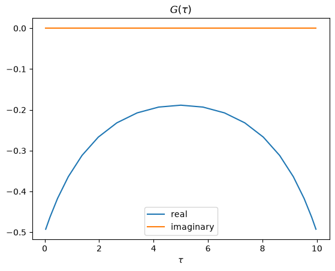
</div>
</div>
<p>The so-called Polarization <span class="math notranslate nohighlight">\(P(\bar\tau_k^\mathrm{B})\)</span> is given by the random phase approximation, a connection between two Green’s functions:</p>
<div class="math notranslate nohighlight">
\[P(\bar{\tau}_k^\mathrm{B})=G(\bar{\tau}_k^\mathrm{B})*G(\beta-\bar{\tau}_k^\mathrm{B}) = - G(\bar{\tau}_k^\mathrm{B})*G(-\bar{\tau}_k^\mathrm{B})\]</div>
<div class="cell docutils container">
<div class="cell_input docutils container">
<div class="highlight-ipython3 notranslate"><div class="highlight"><pre><span></span><span class="c1">#Polarisation P, bosonic</span>

<span class="n">P_tau_b</span><span class="o">=</span><span class="n">G_tau_b</span><span class="o">*</span><span class="p">(</span><span class="n">basisf</span><span class="o">.</span><span class="n">u</span><span class="p">(</span><span class="n">beta</span><span class="o">-</span><span class="n">tausb</span><span class="o">.</span><span class="n">tau</span><span class="p">)</span><span class="o">.</span><span class="n">T</span><span class="nd">@G_l_f</span><span class="p">)</span>
</pre></div>
</div>
</div>
</div>
<div class="cell docutils container">
<div class="cell_input docutils container">
<div class="highlight-ipython3 notranslate"><div class="highlight"><pre><span></span><span class="n">pl</span><span class="o">.</span><span class="n">plot</span><span class="p">(</span><span class="n">tausb</span><span class="o">.</span><span class="n">tau</span><span class="p">,</span><span class="n">P_tau_b</span><span class="o">.</span><span class="n">imag</span><span class="p">,</span><span class="n">label</span><span class="o">=</span><span class="s1">'imaginary'</span><span class="p">)</span>
<span class="n">pl</span><span class="o">.</span><span class="n">plot</span><span class="p">(</span><span class="n">tausb</span><span class="o">.</span><span class="n">tau</span><span class="p">,</span><span class="n">P_tau_b</span><span class="o">.</span><span class="n">real</span><span class="p">,</span><span class="n">label</span><span class="o">=</span><span class="s1">'real'</span><span class="p">)</span>

<span class="n">pl</span><span class="o">.</span><span class="n">title</span><span class="p">(</span><span class="sa">r</span><span class="s1">' $P(\tau)$'</span><span class="p">)</span>
<span class="n">pl</span><span class="o">.</span><span class="n">xlabel</span><span class="p">(</span><span class="sa">r</span><span class="s1">'$\tau$'</span><span class="p">)</span>
<span class="n">pl</span><span class="o">.</span><span class="n">legend</span><span class="p">()</span>
</pre></div>
</div>
</div>
<div class="cell_output docutils container">
<div class="output text_plain highlight-myst-ansi notranslate"><div class="highlight"><pre><span></span>&lt;matplotlib.legend.Legend at 0x7fd875723250&gt;
</pre></div>
</div>
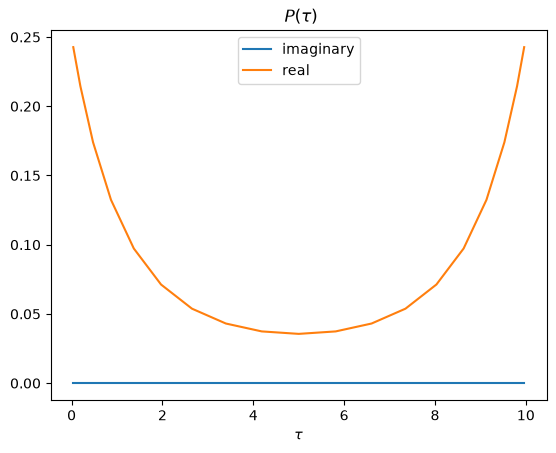
</div>
</div>
<p>The same way we transformed <span class="math notranslate nohighlight">\(G^\mathrm{F}(\mathrm{i}\bar{\nu}_k^\mathrm{F})\)</span> into <span class="math notranslate nohighlight">\(G^\mathrm{B}(\bar\tau_k^\mathrm{B})\)</span> we are now able to transform <span class="math notranslate nohighlight">\(P^\mathrm{B}(\bar\tau_k^\mathrm{B})\)</span> into <span class="math notranslate nohighlight">\(P^\mathrm{B}(\mathrm{i}\bar{\nu}_k^\mathrm{B})\)</span> again using least Square fitting and evaluating <span class="math notranslate nohighlight">\(P_l^\mathrm{B}\)</span> on the given sampling points (Matsubara frequencies).</p>
<div class="math notranslate nohighlight">
\[P_l^\mathrm{B}=\underset{P_l}{\arg\min}   \sum_{k}|P(\bar{{\tau}}_k^\mathrm{B})-\sum_{l=0}^{L-1}U_l^\mathrm{B} (\bar{\tau}_k^\mathrm{B})P_l|^2\]</div>
<div class="cell docutils container">
<div class="cell_input docutils container">
<div class="highlight-ipython3 notranslate"><div class="highlight"><pre><span></span><span class="c1">#P_l, bosonic</span>


<span class="n">P_l_b</span><span class="o">=</span><span class="n">tausb</span><span class="o">.</span><span class="n">fit</span><span class="p">(</span><span class="n">P_tau_b</span><span class="p">)</span>
</pre></div>
</div>
</div>
</div>
<div class="cell docutils container">
<div class="cell_input docutils container">
<div class="highlight-ipython3 notranslate"><div class="highlight"><pre><span></span><span class="n">pl</span><span class="o">.</span><span class="n">semilogy</span><span class="p">(</span><span class="n">np</span><span class="o">.</span><span class="n">abs</span><span class="p">(</span><span class="n">P_l_b</span><span class="p">),</span><span class="s1">'+-'</span><span class="p">)</span>
<span class="n">pl</span><span class="o">.</span><span class="n">title</span><span class="p">(</span><span class="s1">'$P_l^B$ over l '</span><span class="p">)</span>
<span class="n">pl</span><span class="o">.</span><span class="n">xticks</span><span class="p">(</span><span class="nb">range</span><span class="p">(</span><span class="mi">0</span><span class="p">,</span><span class="mi">20</span><span class="p">))</span>
<span class="n">pl</span><span class="o">.</span><span class="n">xlabel</span><span class="p">(</span><span class="s1">'l'</span><span class="p">)</span>
</pre></div>
</div>
</div>
<div class="cell_output docutils container">
<div class="output text_plain highlight-myst-ansi notranslate"><div class="highlight"><pre><span></span>Text(0.5, 0, 'l')
</pre></div>
</div>
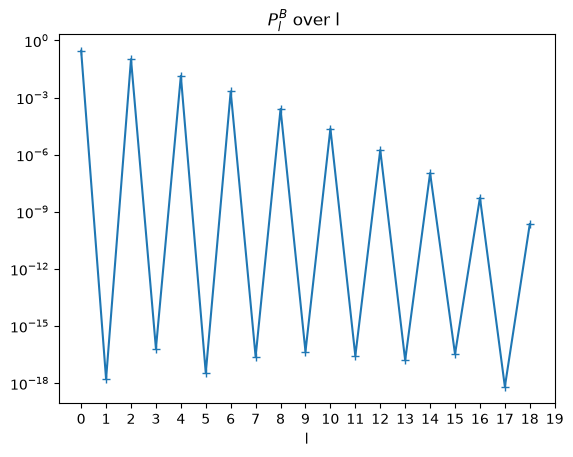
</div>
</div>
<div class="math notranslate nohighlight">
\[P(\mathrm{i}\bar{\nu}_k^\mathrm{B})= \sum_{l=0}^{L-1} P_l^\mathrm{B}\hat{U}_l^\mathrm{B}(\mathrm{i}\bar{\nu}_k^\mathrm{B})\]</div>
<div class="cell docutils container">
<div class="cell_input docutils container">
<div class="highlight-ipython3 notranslate"><div class="highlight"><pre><span></span><span class="c1">#P_iw, bosonic</span>

<span class="c1">#P_iw_b=np.einsum('lv,l-&gt;v', basisb.uhat(matsb.wn),P_l_b)</span>

<span class="n">P_iw_b</span><span class="o">=</span><span class="n">matsb</span><span class="o">.</span><span class="n">evaluate</span><span class="p">(</span><span class="n">P_l_b</span><span class="p">)</span>
</pre></div>
</div>
</div>
</div>
<div class="cell docutils container">
<div class="cell_input docutils container">
<div class="highlight-ipython3 notranslate"><div class="highlight"><pre><span></span><span class="n">pl</span><span class="o">.</span><span class="n">plot</span><span class="p">(</span><span class="n">matsb</span><span class="o">.</span><span class="n">wn</span><span class="p">,</span><span class="n">P_iw_b</span><span class="o">.</span><span class="n">imag</span><span class="p">,</span><span class="n">label</span><span class="o">=</span><span class="s1">'imaginary'</span><span class="p">)</span>
<span class="n">pl</span><span class="o">.</span><span class="n">plot</span><span class="p">(</span><span class="n">matsb</span><span class="o">.</span><span class="n">wn</span><span class="p">,</span><span class="n">P_iw_b</span><span class="o">.</span><span class="n">real</span><span class="p">,</span><span class="n">label</span><span class="o">=</span><span class="s1">'real'</span><span class="p">)</span>
<span class="n">pl</span><span class="o">.</span><span class="n">title</span><span class="p">(</span><span class="sa">r</span><span class="s1">'$P(\mathrm</span><span class="si">{i}</span><span class="s1">\nu^\mathrm</span><span class="si">{B}</span><span class="s1">)$'</span><span class="p">)</span>
<span class="n">pl</span><span class="o">.</span><span class="n">xlabel</span><span class="p">(</span><span class="sa">r</span><span class="s1">'$n$'</span><span class="p">)</span>
<span class="n">pl</span><span class="o">.</span><span class="n">legend</span><span class="p">()</span>
</pre></div>
</div>
</div>
<div class="cell_output docutils container">
<div class="output text_plain highlight-myst-ansi notranslate"><div class="highlight"><pre><span></span>&lt;matplotlib.legend.Legend at 0x7fd87533b750&gt;
</pre></div>
</div>
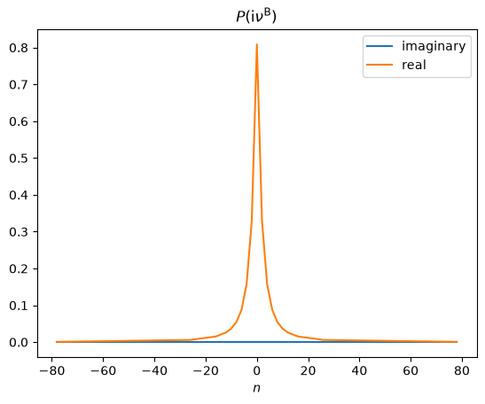
</div>
</div>
<p>Following <span class="math notranslate nohighlight">\(P\)</span> we will now calculate the Screened Interaction <span class="math notranslate nohighlight">\(W\)</span> with the following formula:</p>
<div class="math notranslate nohighlight">
\[W(\mathrm{i}\bar{\nu}_k^\mathrm{B})= U + UP(\mathrm{i}\bar{\nu}_k^\mathrm{B})W(\mathrm{i}\bar{\nu}_k^\mathrm{B})\]</div>
<p>or</p>
<div class="math notranslate nohighlight">
\[W(\mathrm{i}\bar{\nu}_k^\mathrm{B})= \frac{U}{1-UP(\mathrm{i}\bar{\nu}_k^\mathrm{B})}\]</div>
<p>This equation has the exact same form as the Dyson equation but instead of connecting the Green’s functions and the self energy it connects the Screened Coulomb Interaction <span class="math notranslate nohighlight">\(W\)</span> and the polarization operator <span class="math notranslate nohighlight">\(P\)</span>. Because <span class="math notranslate nohighlight">\(U\)</span> is the bare Coulomb interaction and <span class="math notranslate nohighlight">\(P\)</span> is an object containing all irreducible processes (meaning in Feynmann diagrams cutting an interaction line U does not result in two sides) <span class="math notranslate nohighlight">\(W\)</span> can be understood as the sum of all possible Feymann diagrams with an interaction U between its two parts.[5][11] This becomes quite intuitive if we look at</p>
<div class="math notranslate nohighlight">
\[W= U + UPW= U+UP(U+UP(U+UP(...)))=U+UPU+...\]</div>
<div class="cell docutils container">
<div class="cell_input docutils container">
<div class="highlight-ipython3 notranslate"><div class="highlight"><pre><span></span><span class="c1">#W_iw, bosonic  </span>

<span class="n">U</span><span class="o">=</span><span class="mi">1</span><span class="o">/</span><span class="mi">2</span>

<span class="n">W_iw_b_U</span><span class="o">=</span><span class="n">U</span><span class="o">/</span><span class="p">(</span><span class="mi">1</span><span class="o">-</span><span class="p">(</span><span class="n">U</span><span class="o">*</span><span class="n">P_iw_b</span><span class="p">))</span>

<span class="n">W_iw_b</span><span class="o">=</span><span class="n">W_iw_b_U</span><span class="o">-</span><span class="n">U</span>

<span class="c1">#W_iw_b is the part depending on the frequency, any further calculations </span>
<span class="c1">#will be done using this and not W_iw_b_U</span>
</pre></div>
</div>
</div>
</div>
<div class="cell docutils container">
<div class="cell_input docutils container">
<div class="highlight-ipython3 notranslate"><div class="highlight"><pre><span></span><span class="n">pl</span><span class="o">.</span><span class="n">plot</span><span class="p">(</span><span class="n">matsb</span><span class="o">.</span><span class="n">wn</span><span class="p">,</span><span class="n">W_iw_b</span><span class="o">.</span><span class="n">imag</span><span class="p">,</span><span class="n">label</span><span class="o">=</span><span class="s1">'imaginary'</span><span class="p">)</span>
<span class="n">pl</span><span class="o">.</span><span class="n">plot</span><span class="p">(</span><span class="n">matsb</span><span class="o">.</span><span class="n">wn</span><span class="p">,</span><span class="n">W_iw_b</span><span class="o">.</span><span class="n">real</span><span class="p">,</span><span class="n">label</span><span class="o">=</span><span class="s1">'real'</span><span class="p">)</span>
<span class="n">pl</span><span class="o">.</span><span class="n">title</span><span class="p">(</span><span class="sa">r</span><span class="s1">'$W(\mathrm</span><span class="si">{i}</span><span class="s1">\nu^\mathrm</span><span class="si">{B}</span><span class="s1">)$'</span><span class="p">)</span>
<span class="n">pl</span><span class="o">.</span><span class="n">xlabel</span><span class="p">(</span><span class="sa">r</span><span class="s1">'$n$'</span><span class="p">)</span>
<span class="n">pl</span><span class="o">.</span><span class="n">legend</span><span class="p">()</span>
</pre></div>
</div>
</div>
<div class="cell_output docutils container">
<div class="output text_plain highlight-myst-ansi notranslate"><div class="highlight"><pre><span></span>&lt;matplotlib.legend.Legend at 0x7fd8757696d0&gt;
</pre></div>
</div>
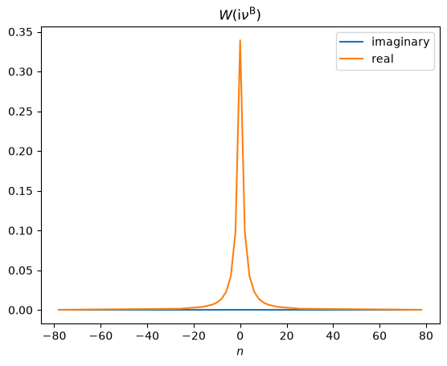
</div>
</div>
<div class="math notranslate nohighlight">
\[W_l^\mathrm{B}\]</div>
<div class="cell docutils container">
<div class="cell_input docutils container">
<div class="highlight-ipython3 notranslate"><div class="highlight"><pre><span></span><span class="c1">#W_l, bosonic</span>

<span class="n">W_l_b</span><span class="o">=</span><span class="n">matsb</span><span class="o">.</span><span class="n">fit</span><span class="p">(</span><span class="n">W_iw_b</span><span class="p">)</span>
</pre></div>
</div>
</div>
</div>
<div class="cell docutils container">
<div class="cell_input docutils container">
<div class="highlight-ipython3 notranslate"><div class="highlight"><pre><span></span><span class="n">pl</span><span class="o">.</span><span class="n">semilogy</span><span class="p">(</span><span class="n">np</span><span class="o">.</span><span class="n">abs</span><span class="p">(</span><span class="n">W_l_b</span><span class="p">),</span><span class="s1">'+-'</span><span class="p">)</span>
<span class="n">pl</span><span class="o">.</span><span class="n">title</span><span class="p">(</span><span class="s1">'$W_l^B$ over l '</span><span class="p">)</span>
<span class="n">pl</span><span class="o">.</span><span class="n">xticks</span><span class="p">(</span><span class="nb">range</span><span class="p">(</span><span class="mi">0</span><span class="p">,</span><span class="mi">20</span><span class="p">))</span>
<span class="n">pl</span><span class="o">.</span><span class="n">xlabel</span><span class="p">(</span><span class="s1">'l'</span><span class="p">)</span>
</pre></div>
</div>
</div>
<div class="cell_output docutils container">
<div class="output text_plain highlight-myst-ansi notranslate"><div class="highlight"><pre><span></span>Text(0.5, 0, 'l')
</pre></div>
</div>
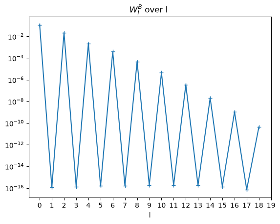
</div>
</div>
<p>In the next step we are changing back into fermionic statistics:</p>
<div class="math notranslate nohighlight">
\[{W}(\bar{\tau}_k^\mathrm{F})= \sum_{l=0}^{L-1} W_l^\mathrm{B}U_l^\mathrm{B}(\bar{\tau}_k^\mathrm{F}) \]</div>
<div class="cell docutils container">
<div class="cell_input docutils container">
<div class="highlight-ipython3 notranslate"><div class="highlight"><pre><span></span><span class="c1">#W_tau_f, fermionic</span>

<span class="n">W_tau_f</span><span class="o">=</span><span class="n">np</span><span class="o">.</span><span class="n">einsum</span><span class="p">(</span><span class="s1">'lt,l-&gt;t'</span><span class="p">,</span><span class="n">basisb</span><span class="o">.</span><span class="n">u</span><span class="p">(</span><span class="n">tausf</span><span class="o">.</span><span class="n">tau</span><span class="p">),</span><span class="n">W_l_b</span><span class="p">)</span>

<span class="c1">#W_tau_f=tausf.evaluate(W_l_b)</span>
</pre></div>
</div>
</div>
</div>
<div class="cell docutils container">
<div class="cell_input docutils container">
<div class="highlight-ipython3 notranslate"><div class="highlight"><pre><span></span><span class="n">pl</span><span class="o">.</span><span class="n">plot</span><span class="p">(</span><span class="n">tausf</span><span class="o">.</span><span class="n">tau</span><span class="p">,</span><span class="n">W_tau_f</span><span class="o">.</span><span class="n">imag</span><span class="p">,</span><span class="n">label</span><span class="o">=</span><span class="s1">'imaginary'</span><span class="p">)</span>
<span class="n">pl</span><span class="o">.</span><span class="n">plot</span><span class="p">(</span><span class="n">tausf</span><span class="o">.</span><span class="n">tau</span><span class="p">,</span><span class="n">W_tau_f</span><span class="o">.</span><span class="n">real</span><span class="p">,</span><span class="n">label</span><span class="o">=</span><span class="s1">'real'</span><span class="p">)</span>
<span class="n">pl</span><span class="o">.</span><span class="n">title</span><span class="p">(</span><span class="sa">r</span><span class="s1">'$W(\tau)$'</span><span class="p">)</span>
<span class="n">pl</span><span class="o">.</span><span class="n">xlabel</span><span class="p">(</span><span class="sa">r</span><span class="s1">'$\tau$'</span><span class="p">)</span>
<span class="n">pl</span><span class="o">.</span><span class="n">legend</span><span class="p">()</span>
</pre></div>
</div>
</div>
<div class="cell_output docutils container">
<div class="output text_plain highlight-myst-ansi notranslate"><div class="highlight"><pre><span></span>&lt;matplotlib.legend.Legend at 0x7fd8744e4690&gt;
</pre></div>
</div>
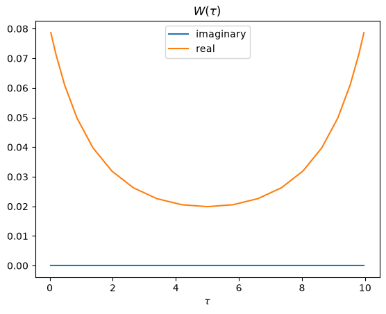
</div>
</div>
<p>After changing back into fermionic statistics the next quantity that is being dealt with is the so-called self energy <span class="math notranslate nohighlight">\(\Sigma\)</span>. When we first introduced the Dyson equation in the first chapter, we saw <span class="math notranslate nohighlight">\(V\)</span> as some sort of pertubation. The self-energy is very much alike as it describes the correlation effects of a many-body system. Here we will calculate <span class="math notranslate nohighlight">\(\tilde{\Sigma}(\bar{\tau}_k^\mathrm{F})\)</span> using <span class="math notranslate nohighlight">\(\Sigma^{GW}\)</span> so that</p>
<div class="math notranslate nohighlight">
\[{\Sigma}(\bar{\tau}_k^\mathrm{F})=-G(\bar{\tau}_k^\mathrm{F})*{W}(\bar{\tau}_k^\mathrm{F}).\]</div>
<p>This can again be rewritten into its equivalent form</p>
<div class="math notranslate nohighlight">
\[\Sigma=-G(U+UP(U+UP(...)))= -(GU+GUPU+GUPUPU+...)\]</div>
<div class="cell docutils container">
<div class="cell_input docutils container">
<div class="highlight-ipython3 notranslate"><div class="highlight"><pre><span></span><span class="c1">#E_tau , fermionic   </span>

<span class="n">E_tau_f</span><span class="o">=</span><span class="n">G_tau_f</span><span class="o">*</span><span class="n">W_tau_f</span>
</pre></div>
</div>
</div>
</div>
<div class="cell docutils container">
<div class="cell_input docutils container">
<div class="highlight-ipython3 notranslate"><div class="highlight"><pre><span></span><span class="n">pl</span><span class="o">.</span><span class="n">plot</span><span class="p">(</span><span class="n">tausf</span><span class="o">.</span><span class="n">tau</span><span class="p">,</span><span class="n">E_tau_f</span><span class="o">.</span><span class="n">imag</span><span class="p">,</span><span class="n">label</span><span class="o">=</span><span class="s1">'imaginary'</span><span class="p">)</span>
<span class="n">pl</span><span class="o">.</span><span class="n">plot</span><span class="p">(</span><span class="n">tausf</span><span class="o">.</span><span class="n">tau</span><span class="p">,</span><span class="n">E_tau_f</span><span class="o">.</span><span class="n">real</span><span class="p">,</span><span class="n">label</span><span class="o">=</span><span class="s1">'real'</span><span class="p">)</span>
<span class="n">pl</span><span class="o">.</span><span class="n">title</span><span class="p">(</span><span class="sa">r</span><span class="s1">'$\Sigma(\tau)$'</span><span class="p">)</span>
<span class="n">pl</span><span class="o">.</span><span class="n">xlabel</span><span class="p">(</span><span class="sa">r</span><span class="s1">'$\tau$'</span><span class="p">)</span>
<span class="n">pl</span><span class="o">.</span><span class="n">legend</span><span class="p">()</span>
</pre></div>
</div>
</div>
<div class="cell_output docutils container">
<div class="output text_plain highlight-myst-ansi notranslate"><div class="highlight"><pre><span></span>&lt;matplotlib.legend.Legend at 0x7fd874361450&gt;
</pre></div>
</div>
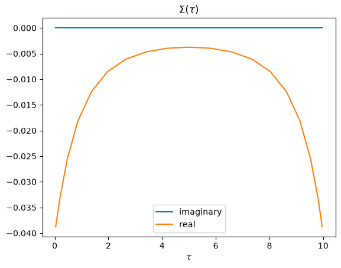
</div>
</div>
<div class="math notranslate nohighlight">
\[{\Sigma}_l^\mathrm{F}\]</div>
<div class="cell docutils container">
<div class="cell_input docutils container">
<div class="highlight-ipython3 notranslate"><div class="highlight"><pre><span></span><span class="c1">#E_l, fermionic</span>

<span class="n">E_l_f</span><span class="o">=</span><span class="n">tausf</span><span class="o">.</span><span class="n">fit</span><span class="p">(</span><span class="n">E_tau_f</span><span class="p">)</span>
</pre></div>
</div>
</div>
</div>
<div class="cell docutils container">
<div class="cell_input docutils container">
<div class="highlight-ipython3 notranslate"><div class="highlight"><pre><span></span><span class="n">pl</span><span class="o">.</span><span class="n">semilogy</span><span class="p">(</span><span class="n">np</span><span class="o">.</span><span class="n">abs</span><span class="p">(</span><span class="n">E_l_f</span><span class="p">),</span><span class="s1">'+-'</span><span class="p">)</span>
<span class="n">pl</span><span class="o">.</span><span class="n">title</span><span class="p">(</span><span class="sa">r</span><span class="s1">'$\Sigma_l^F$ over l '</span><span class="p">)</span>
<span class="n">pl</span><span class="o">.</span><span class="n">xticks</span><span class="p">(</span><span class="nb">range</span><span class="p">(</span><span class="mi">0</span><span class="p">,</span><span class="mi">20</span><span class="p">))</span>
<span class="n">pl</span><span class="o">.</span><span class="n">xlabel</span><span class="p">(</span><span class="s1">'l'</span><span class="p">)</span>
</pre></div>
</div>
</div>
<div class="cell_output docutils container">
<div class="output text_plain highlight-myst-ansi notranslate"><div class="highlight"><pre><span></span>Text(0.5, 0, 'l')
</pre></div>
</div>
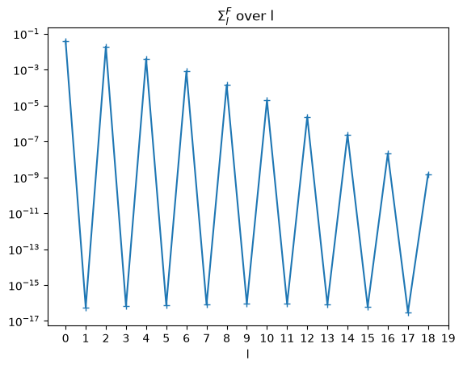
</div>
</div>
<p>We will calculate</p>
<div class="math notranslate nohighlight">
\[\Sigma(\mathrm{i}\bar{\nu}_k^\mathrm{F})=-UG(\beta^-)+\sum_{l=0}^{L-1}{\Sigma}_l^\mathrm{F} \hat{U}_l^\mathrm{F}(\mathrm{i}\bar{\nu}_k^\mathrm{F})\]</div>
<p>with <span class="math notranslate nohighlight">\(UG(\beta^-)\)</span> as the so called Hartee Fock term.</p>
<div class="cell docutils container">
<div class="cell_input docutils container">
<div class="highlight-ipython3 notranslate"><div class="highlight"><pre><span></span><span class="c1">#E_iw, fermionic</span>

<span class="c1">#E_iw_f=p.einsum('lw,l-&gt;w',basisf.uhat(matsf.wn),E_l_f)-U*(basisf.u(beta).T@G_l_f)</span>

<span class="n">E_iw_f_U</span><span class="o">=</span><span class="n">matsf</span><span class="o">.</span><span class="n">evaluate</span><span class="p">(</span><span class="n">E_l_f</span><span class="p">)</span><span class="o">-</span><span class="n">U</span><span class="o">*</span><span class="p">(</span><span class="n">basisf</span><span class="o">.</span><span class="n">u</span><span class="p">(</span><span class="n">beta</span><span class="p">)</span><span class="o">.</span><span class="n">T</span><span class="nd">@G_l_f</span><span class="p">)</span>
<span class="n">E_iw_f</span><span class="o">=</span><span class="n">matsf</span><span class="o">.</span><span class="n">evaluate</span><span class="p">(</span><span class="n">E_l_f</span><span class="p">)</span>


<span class="c1">#store E_iw_f of this iteration in E_iw_f_arr</span>
<span class="n">E_iw_f_arr</span><span class="o">.</span><span class="n">append</span><span class="p">(</span><span class="n">E_iw_f_U</span><span class="p">)</span>
</pre></div>
</div>
</div>
</div>
<div class="cell docutils container">
<div class="cell_input docutils container">
<div class="highlight-ipython3 notranslate"><div class="highlight"><pre><span></span><span class="n">fig</span><span class="p">,</span> <span class="n">ax</span> <span class="o">=</span> <span class="n">pl</span><span class="o">.</span><span class="n">subplots</span><span class="p">(</span><span class="mi">1</span><span class="p">,</span><span class="mi">2</span><span class="p">,</span> <span class="n">figsize</span><span class="o">=</span><span class="p">(</span><span class="mi">12</span><span class="p">,</span><span class="mi">5</span><span class="p">)</span> <span class="p">)</span>
<span class="n">ax</span><span class="p">[</span><span class="mi">0</span><span class="p">]</span><span class="o">.</span><span class="n">plot</span><span class="p">(</span><span class="n">matsf</span><span class="o">.</span><span class="n">wn</span><span class="p">,</span><span class="n">E_iw_f_U</span><span class="o">.</span><span class="n">imag</span><span class="p">)</span>
<span class="n">ax</span><span class="p">[</span><span class="mi">0</span><span class="p">]</span><span class="o">.</span><span class="n">set_title</span><span class="p">(</span><span class="sa">r</span><span class="s1">'Imaginary part of $\Sigma(\mathrm</span><span class="si">{i}</span><span class="s1">\nu^\mathrm</span><span class="si">{F}</span><span class="s1">)$'</span><span class="p">)</span>
<span class="n">ax</span><span class="p">[</span><span class="mi">0</span><span class="p">]</span><span class="o">.</span><span class="n">set_xlabel</span><span class="p">(</span><span class="sa">r</span><span class="s1">'$n$'</span><span class="p">)</span>
<span class="n">ax</span><span class="p">[</span><span class="mi">1</span><span class="p">]</span><span class="o">.</span><span class="n">plot</span><span class="p">(</span><span class="n">matsf</span><span class="o">.</span><span class="n">wn</span><span class="p">,</span><span class="n">E_iw_f_U</span><span class="o">.</span><span class="n">real</span><span class="p">)</span>
<span class="n">ax</span><span class="p">[</span><span class="mi">1</span><span class="p">]</span><span class="o">.</span><span class="n">set_title</span><span class="p">(</span><span class="sa">r</span><span class="s1">'Real part of $\Sigma(\mathrm</span><span class="si">{i}</span><span class="s1">\nu^\mathrm</span><span class="si">{F}</span><span class="s1">)$'</span><span class="p">)</span>
<span class="n">ax</span><span class="p">[</span><span class="mi">1</span><span class="p">]</span><span class="o">.</span><span class="n">set_xlabel</span><span class="p">(</span><span class="sa">r</span><span class="s1">'$n$'</span><span class="p">)</span>
</pre></div>
</div>
</div>
<div class="cell_output docutils container">
<div class="output text_plain highlight-myst-ansi notranslate"><div class="highlight"><pre><span></span>Text(0.5, 0, '$n$')
</pre></div>
</div>
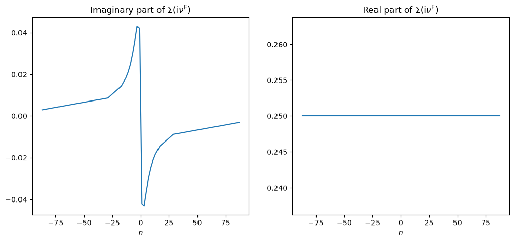
</div>
</div>
<p>Last but not least we will obtain <span class="math notranslate nohighlight">\(G^\mathrm{F}(\mathrm{i}\bar{\nu}_k^\mathrm{F})\)</span> through the Dyson Equation of GW:</p>
<div class="math notranslate nohighlight">
\[G(\mathrm{i}\bar{\nu}_k^\mathrm{F})=G_0(\mathrm{i}\bar{\nu}_k^\mathrm{F})+G_0(\mathrm{i}\bar{\nu}_k^\mathrm{F})\Sigma(\mathrm{i}\bar{\nu}_k^\mathrm{F})G(\mathrm{i}\bar{\nu}_k^\mathrm{F})\]</div>
<p>or</p>
<div class="math notranslate nohighlight">
\[G(\mathrm{i}\bar{\nu}_k^\mathrm{F})=\frac{1}{G_0(\mathrm{i}\bar{\nu}_k^\mathrm{F})^{-1}-\Sigma(\mathrm{i}\bar{\nu}_k^\mathrm{F})}\]</div>
<p>We have now calculated the full Green’s function of the system with <span class="math notranslate nohighlight">\(\Sigma\)</span> as a set of (one-particle) irreducible processes connected by <span class="math notranslate nohighlight">\(G_0\)</span>.[11]</p>
<div class="cell docutils container">
<div class="cell_input docutils container">
<div class="highlight-ipython3 notranslate"><div class="highlight"><pre><span></span><span class="c1">#G_iw, fermonic     -&gt; Dyson Equation</span>

<span class="n">G_iw_f</span><span class="o">=</span><span class="p">((</span><span class="n">G_iw_0</span><span class="p">)</span><span class="o">**-</span><span class="mi">1</span><span class="o">-</span><span class="n">E_iw_f</span><span class="p">)</span><span class="o">**-</span><span class="mi">1</span>    
</pre></div>
</div>
</div>
</div>
<div class="cell docutils container">
<div class="cell_input docutils container">
<div class="highlight-ipython3 notranslate"><div class="highlight"><pre><span></span><span class="n">pl</span><span class="o">.</span><span class="n">plot</span><span class="p">(</span><span class="n">matsf</span><span class="o">.</span><span class="n">wn</span><span class="p">,</span><span class="n">G_iw_f</span><span class="o">.</span><span class="n">imag</span><span class="p">,</span><span class="n">label</span><span class="o">=</span><span class="s1">'imaginary'</span><span class="p">)</span>
<span class="n">pl</span><span class="o">.</span><span class="n">plot</span><span class="p">(</span><span class="n">matsf</span><span class="o">.</span><span class="n">wn</span><span class="p">,</span><span class="n">G_iw_f</span><span class="o">.</span><span class="n">real</span><span class="p">,</span><span class="n">label</span><span class="o">=</span><span class="s1">'real'</span><span class="p">)</span>
<span class="n">pl</span><span class="o">.</span><span class="n">title</span><span class="p">(</span><span class="sa">r</span><span class="s1">'$G(\mathrm</span><span class="si">{i}</span><span class="s1">\nu^\mathrm</span><span class="si">{F}</span><span class="s1">)$'</span><span class="p">)</span>
<span class="n">pl</span><span class="o">.</span><span class="n">xlabel</span><span class="p">(</span><span class="sa">r</span><span class="s1">'$n$'</span><span class="p">)</span>
<span class="n">pl</span><span class="o">.</span><span class="n">legend</span><span class="p">()</span>
</pre></div>
</div>
</div>
<div class="cell_output docutils container">
<div class="output text_plain highlight-myst-ansi notranslate"><div class="highlight"><pre><span></span>&lt;matplotlib.legend.Legend at 0x7fd87415b110&gt;
</pre></div>
</div>
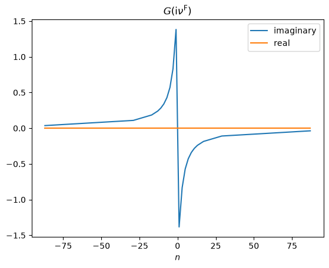
</div>
</div>
<div class="cell docutils container">
<div class="cell_input docutils container">
<div class="highlight-ipython3 notranslate"><div class="highlight"><pre><span></span><span class="k">if</span> <span class="p">(</span><span class="n">i</span><span class="o">&gt;</span><span class="mi">0</span><span class="p">):</span>
    <span class="n">pl</span><span class="o">.</span><span class="n">plot</span><span class="p">(</span><span class="n">matsf</span><span class="o">.</span><span class="n">wn</span><span class="p">,</span><span class="n">E_iw_f_arr</span><span class="p">[</span><span class="n">i</span><span class="p">]</span><span class="o">.</span><span class="n">imag</span><span class="p">,</span><span class="n">label</span><span class="o">=</span><span class="s1">'current'</span><span class="p">)</span>
    <span class="n">pl</span><span class="o">.</span><span class="n">title</span><span class="p">(</span><span class="sa">r</span><span class="s1">'$\Sigma(\mathrm</span><span class="si">{i}</span><span class="s1">\nu^\mathrm</span><span class="si">{F}</span><span class="s1">)$ in the current and previous iteration'</span><span class="p">)</span>
    <span class="n">pl</span><span class="o">.</span><span class="n">plot</span><span class="p">(</span><span class="n">matsf</span><span class="o">.</span><span class="n">wn</span><span class="p">,</span><span class="n">E_iw_f_arr</span><span class="p">[</span><span class="n">i</span><span class="o">-</span><span class="mi">1</span><span class="p">]</span><span class="o">.</span><span class="n">imag</span><span class="p">,</span><span class="s1">'.'</span><span class="p">,</span><span class="n">label</span><span class="o">=</span><span class="s1">'previous'</span><span class="p">)</span>
    <span class="n">pl</span><span class="o">.</span><span class="n">xlabel</span><span class="p">(</span><span class="sa">r</span><span class="s1">'$n$'</span><span class="p">)</span>
    <span class="n">pl</span><span class="o">.</span><span class="n">legend</span><span class="p">()</span>
    <span class="n">pl</span><span class="o">.</span><span class="n">show</span><span class="p">()</span>
    <span class="n">pl</span><span class="o">.</span><span class="n">plot</span><span class="p">(</span><span class="n">matsf</span><span class="o">.</span><span class="n">wn</span><span class="p">,</span><span class="n">np</span><span class="o">.</span><span class="n">abs</span><span class="p">(</span><span class="n">E_iw_f_arr</span><span class="p">[</span><span class="n">i</span><span class="p">]</span><span class="o">-</span><span class="n">E_iw_f_arr</span><span class="p">[</span><span class="n">i</span><span class="o">-</span><span class="mi">1</span><span class="p">]))</span>
    <span class="n">pl</span><span class="o">.</span><span class="n">title</span><span class="p">(</span><span class="sa">r</span><span class="s1">'$|\Sigma_i(\mathrm</span><span class="si">{i}</span><span class="s1">\nu^\mathrm</span><span class="si">{F}</span><span class="s1">)-\Sigma_{i-1}(\mathrm</span><span class="si">{i}</span><span class="s1">\nu^\mathrm</span><span class="si">{F}</span><span class="s1">)|$'</span> <span class="p">)</span>
    <span class="n">pl</span><span class="o">.</span><span class="n">xlabel</span><span class="p">(</span><span class="sa">r</span><span class="s1">'$n$'</span><span class="p">)</span>
    
</pre></div>
</div>
</div>
</div>
<div class="cell docutils container">
<div class="cell_input docutils container">
<div class="highlight-ipython3 notranslate"><div class="highlight"><pre><span></span><span class="c1">#Iterations </span>
<span class="n">i</span><span class="o">+=</span><span class="mi">1</span>
<span class="nb">print</span><span class="p">(</span><span class="s1">'full iterations: '</span><span class="p">,</span><span class="n">i</span><span class="p">)</span>
</pre></div>
</div>
</div>
<div class="cell_output docutils container">
<div class="output stream highlight-myst-ansi notranslate"><div class="highlight"><pre><span></span>full iterations:  1
</pre></div>
</div>
</div>
</div>
<div class="cell docutils container">
<div class="cell_input docutils container">
<div class="highlight-ipython3 notranslate"><div class="highlight"><pre><span></span><span class="nb">print</span><span class="p">(</span><span class="n">G_iw_f</span><span class="p">)</span>
</pre></div>
</div>
</div>
<div class="cell_output docutils container">
<div class="output stream highlight-myst-ansi notranslate"><div class="highlight"><pre><span></span>[ 8.07749411e-20+0.03657118j -9.43577767e-19+0.10932936j
 -2.57497274e-18+0.18513256j -1.23061196e-17+0.24022776j
  3.69462406e-18+0.28186922j  1.02235363e-17+0.34036864j
  4.46560534e-18+0.4278915j   5.08326346e-18+0.57065346j
 -4.44789783e-17+0.83239627j -2.30586896e-16+1.38269615j
 -2.11703851e-16-1.38269615j -6.39017960e-17-0.83239627j
 -2.39806825e-18-0.57065346j  2.07178273e-18-0.4278915j
  1.01580778e-17-0.34036864j  3.95586892e-18-0.28186922j
 -1.22345561e-17-0.24022776j -2.70032214e-18-0.18513256j
 -8.50847199e-19-0.10932936j  8.26278483e-20-0.03657118j]
</pre></div>
</div>
</div>
</div>
<p>With this we have completed one full iteration of GF2 &amp; GW. Repeating this over and over again will show convergence and thus give the desired approximation to the self-energy.</p>
</section>
<section id="conclusion">
<h1>Conclusion<a class="headerlink" href="#conclusion" title="Link to this heading">#</a></h1>
<p>The above code illustrated a full iteration of GW &amp; GF2 with sparse_ir.</p>
<p>Taking advantage of the Singular Value Expansion of the imaginary time Green’s function allowed for the construction of the Intermediate Representation: A basis for the Matsubara Green’s function which makes it possible to switch back and forth between time and frequency domain.</p>
<p>Pairing this with the GW &amp; GF2 approximations and the Hedin equations, we were able to make use of the IR. Because the Hedin equations are diagonal in one or the other representation, we had the IR basis work as a translator between these and ensure excact as well as fast calcuations for quantities like the self-energy, the polarization and the screened colomb interaction. All this while suffering a minimal loss in information.</p>
<p>Each quantity was computed after the same scheme: Calculation, transformation and Evaluation. First we derived the quantity in its time or frequency representation through a Hedin equation. Then we transformed it using Least Square fitting. Once we obtained the IR expansion coefficients we were able to evaluate the function on the corresponding sampling points given by sparse_ir.</p>
<p>Of course, in order to increase the accuracy of our calculations more iterations will be needed.</p>
<p>Naturally this idea of using the Intermediate Representation in order to facilitate calculations can be expanded in various directions. One could go beyond single orbital calculations with the use of matrices or implement another type of vertex-approximation. Undoubtedly not anywhere near all options have been exhausted, not for the use of the IR Basis nor other machine learning methods used in physics.</p>
</section>
<section id="sources">
<h1>Sources<a class="headerlink" href="#sources" title="Link to this heading">#</a></h1>
<p>[1] H.Bruus, Karsten Flensberg,<em>Many-body Quantum Theory in Condensed    Matter  Physics</em> (Oxford University Press Inc., New York, 2004)<br>
[2] J.W.Negele, H.Orland, <em>Quantum Many-Particle Systems</em> (Westview Press, 1998)<br>
[3] G.D.Mahan,<em>Many-Particle Physics</em> (Kluwer Academic/Plenum Publishers, New York, 2000)<br>
[4] P.C.Hansen,<em>Dicrete Inverse Problems</em>(Society for Industrial and Applied Mathematics, Philadelphia,2010)<br>
[5] <a class="reference external" href="http://J.Li">J.Li</a>, M.Wallerberger, N.Chikano, C.Yeh, E.Gull and H.Shinaoka, Sparse sampling approach to efficient ab initio calculations at finite temperature, Phys. Rev. B 101, 035144 (2020)<br>
[6] M.Wallerberger, H. Shinaoka, A.Kauch, Solving the Bethe–Salpeter equation with exponential convergence, Phys. Rev. Research 3, 033168 (2021)<br>
[7] H. Shinaoka, N. Chikano, E. Gull, J. Li, T. Nomoto, J. Otsuki, M. Wallerberger, T. Wang, K. Yoshimi, Efficient ab initio many-body calculations based on sparse modeling of Matsubara Green’s function (2021)<br>
[8] F. Aryasetiawan and O. Gunnarsson, The GW method, Rep. Prog. Phys. 61 (1998) 237<br>
[9] Matteo Gatti, <em>The GW approximation</em>, TDDFT school, Benasque (2014)<br>
[10] C.Friedrich, <em>Many-Body Pertubation Theory;The GW approximation</em>, Peter Grünberg Institut and Institute for Advanced Simulation, Jülich <br>
[11] K. Held, C. Taranto, G. Rohringer, and A. Toschi, <em>Hedin Equations, GW, GW+DMFT, and All That</em> (Modeling and Simulation Vol. 1, Forschungszentrum Jülich, 2011)<br>
[12] X. Gonze, B. Amadon, P.-M. Anglade, J.-M. Beuken, F. Bottin, P. Boulanger,
F. Bruneval, D. Caliste, R. Caracas, M. Côté, T. Deutsch, L. Genovese, Ph. Ghosez,M. Giantomassi, S. Goedecker, D.R. Hamann, P. Hermet, F. Jollet, G. Jomard, S. Leroux, M. Mancini, S. Mazevet, M.J.T. Oliveira, G. Onida, Y. Pouillon, T. Rangel,G.-M. Rignanese, D. Sangalli, R. Shaltaf, M. Torrent, M.J. Verstraete, G. Zerah, J.W. Zwanziger, <em>ABINIT: First-principles approach to material and nanosystem properties</em>, Computer Physics Communications 180 (2009) 2582–2615<br>
[13] H. Shinaoka, J. Otsuki, M. Ohzeki and K. Yoshimi, Compressing Green’s function using
intermediate representation between imaginary-time and real-frequency domains, Physical
Review B 96(3), 035147 (2017), doi:10.1103/physrevb.96.035147.<br>
[14] J. Otsuki, M. Ohzeki, H. Shinaoka and K. Yoshimi, Sparse modeling approach to analytical continuation of imaginary-time quantum Monte Carlo data, Physical Review E
95(6), 061302® (2017), doi:10.1103/physreve.95.061302.<br></p>
</section>

    <script type="text/x-thebe-config">
    {
        requestKernel: true,
        binderOptions: {
            repo: "binder-examples/jupyter-stacks-datascience",
            ref: "master",
        },
        codeMirrorConfig: {
            theme: "abcdef",
            mode: "python"
        },
        kernelOptions: {
            name: "python3",
            path: "./src"
        },
        predefinedOutput: true
    }
    </script>
    <script>kernelName = 'python3'</script>

                </article>
              

              
              
              
              
                <footer class="prev-next-footer d-print-none">
                  
<div class="prev-next-area">
    <a class="left-prev"
       href="second_order_perturbation_py.html"
       title="previous page">
      <i class="fa-solid fa-angle-left"></i>
      <div class="prev-next-info">
        <p class="prev-next-subtitle">previous</p>
        <p class="prev-next-title">Second-order perturbation</p>
      </div>
    </a>
    <a class="right-next"
       href="DMFT_IPT_py.html"
       title="next page">
      <div class="prev-next-info">
        <p class="prev-next-subtitle">next</p>
        <p class="prev-next-title">DMFT with IPT solver</p>
      </div>
      <i class="fa-solid fa-angle-right"></i>
    </a>
</div>
                </footer>
              
            </div>
            
            
              
                <dialog id="pst-secondary-sidebar-modal"></dialog>
                <div id="pst-secondary-sidebar" class="bd-sidebar-secondary bd-toc"><div class="sidebar-secondary-items sidebar-secondary__inner">


  <div class="sidebar-secondary-item"><div
    id="pst-page-navigation-heading-2"
    class="page-toc tocsection onthispage">
    <i class="fa-solid fa-list"></i> Contents
  </div>
  <nav id="pst-page-toc-nav" class="page-toc" aria-labelledby="pst-page-navigation-heading-2">
    <ul class="pst-show_toc_level nav section-nav flex-column">
<li class="toc-h1 nav-item toc-entry"><a class="reference internal nav-link" href="#">The GF2 &amp; GW method</a></li>
<li class="toc-h1 nav-item toc-entry"><a class="reference internal nav-link" href="#conclusion">Conclusion</a></li>
<li class="toc-h1 nav-item toc-entry"><a class="reference internal nav-link" href="#sources">Sources</a></li>
</ul>

  </nav></div>

</div></div>
              
            
          </div>
          <footer class="bd-footer-content">
            
<div class="bd-footer-content__inner container">
  
  <div class="footer-item">
    
<p class="component-author">
By sparse-ir developers
</p>

  </div>
  
  <div class="footer-item">
    

  <p class="copyright">
    
      © Copyright 2022.
      <br/>
    
  </p>

  </div>
  
  <div class="footer-item">
    
  </div>
  
  <div class="footer-item">
    
  </div>
  
</div>
          </footer>
        

      </main>
    </div>
  </div>
  
  <!-- Scripts loaded after <body> so the DOM is not blocked -->
  <script defer src="../_static/scripts/bootstrap.js?digest=55c26ed414f5f8a31ebb"></script>
<script defer src="../_static/scripts/pydata-sphinx-theme.js?digest=55c26ed414f5f8a31ebb"></script>

  <footer class="bd-footer">
  </footer>
  </body>
</html>